Bonjour à tous. Alors comme ça, vous êtes intéressés par la 3D ? Et avec Flash ? Eh bien ça tombe bien, :) vous êtes au bon endroit, si, si, c'est bien le sujet de ce tutoriel ^^ .
Tout d'abord, il faut savoir que Flash n'est pas prévu pour la 3D. Il faudra donc tout créer avec les outils qui sont mis à notre disposition, cela suppose déjà plusieurs choses :
soit vous êtes très bons en maths (quand je dis 'bons', ce n'est pas doués, mais avec beaucoup de connaissances) et là, vous devriez pouvoir vous débrouiller, même sans mon aide ;
soit vous avez un niveau moyen, mais vous en redemandez, parce que sans maths, on n'ira pas très loin (c'est plutôt là que je me situe, moi aussi ^^ ).
Et enfin si les maths vous rebutent ou vous donnent la nausée, je vous déconseille de lire ce tuto en entier : en effet, on risque d'en manger une sacrée part. :p
Bon : maintenant, coté flash, en vous attaquant à la 3D, même si je reprends tout de zéro, je vous conseille quand même fortement de connaître Flash dans son ensemble ; pour cela, pourquoi ne pas lire le big-tuto de SuprazZz qui y est consacré ?
Bon, voilà un chapitre purement mathématique, mais c'est aussi l'un des plus importants avant d'entamer la 3D via la trigonométrie.
Vous savez sûrement la plupart des choses que je vais vous dire dans ce tuto (pour les avoir vues en cours en général), mais c'est toujours bon de se rafraîchir la mémoire juste avant d'utiliser ces vieux théorèmes. ^^
Nous allons nous intéresser aux notions de fonctions trigonométriques (cosinus, sinus, tangente) et au cercle trigonométrique.
Prenons un triangle ABC rectangle en A (soit A est un angle droit, angle(A) = 90°) :
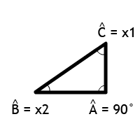
Choisissons un angle de ce triangle, différent de l'angle droit. Par exemple : l'angle B, x1 et x2 sont des inconnues.
On appelle hypoténuse du triangle le plus grand des 3 côtés ; dans un triangle rectangle, celui-ci est toujours le côté qui ne touche pas l'angle droit (ici, c'est donc le segment [BC]).
On appelle côté adjacent à B le côté qui touche l'angle B et qui n'est pas l'hypoténuse (ici, c'est donc le segment [BA]).
On appelle côté opposé à B le côté qui ne touche pas l'angle B (ici, c'est donc le segment [AC]).
Fonctions trigonométriques de base
Nous n'en aurons besoin que de deux, les plus connues, à savoir le cosinus et le sinus. Pour les autres, elles sont listées sur cette page : Fonctions trigonométriques.
Un cercle trigonométrique (aussi appelé cercle unité) est un cercle de centre O (0,0) et de rayon 1. Cela signifie que tous les points qui forment le cercle sont tous à la même distance (on parle alors d'équidistance) du centre (le point O(0,0)), et cette distance est de 1.
Bon. Je vais vous faire un petit dessin :
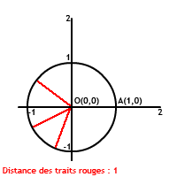
C'est joli un cercle, non ? Oui, mais ça ne nous sert pas à grand-chose de savoir ce qu'est un cercle trigonométrique pour l'instant. :p Mais vous allez voir où je voulais en venir.
On va choisir un angle $a$ au hasard (en degrés), puis on va placer sur notre cercle l'unique point B, tel que l'angle $A\hat{O}B \, = \, a$
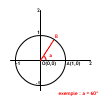
Analysons maintenant les coordonnées du point B :
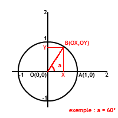
Puis exprimons le cosinus et le sinus de $a$ (dans le triangle OXB rectangle en X) :
Dans la suite du tuto, nous aurons besoin de deux formules de trigonométrie. Ces formules sont importantes, même si elles sont relativement compliquées je vous conseille quand même de les apprendre par coeur. Les voici :
Dans l'application que nous allons en faire, les cosinus et sinus vont nous servir, à partir d'un angle, à trouver les coordonnées de notre clip. Or dans la définition, on a plutôt appris à faire le contraire, c'est-à-dire à déterminer le cosinus, et le sinus à partir de la longueur des côtés. Dans l'autre sens, vous ne savez apparemment pas le faire (mais rassurez-vous, très peu de gens le savent ^^ ). En plus, cela ne va pas nous poser de problème : si vous ne connaissez pas les valeurs du cosinus, ni du sinus, ni d'un angle, votre ordinateur, lui, les connaît, et si donc vous les lui demandez (poliment bien sûr, il ne faut surtout pas le vexer :p ), il pourra vous les donner.
var angle:Number = 1; // la valeur de angle dont vous voulez le cosinus et sinus.
var monCos:Number = Math.cos(angle);
var monSin:Number = Math.sin(angle);
Pour faire cette conversion, je vous propose un petit exercice d'entraînement.
Il faut créer une fonction conversion_radians() qui devra :
recevoir en paramètre un nombre qu'il enregistrera dans une variable degre ;
Effectuer la conversion degrés / radians ;
Renvoyer le résultat obtenu via un return.
function conversion_radians(degre:Number):Number{
return degre/180*Math.PI;
}
// exemple : conversion_radians(90) == Math.PI/2
Bon : voilà pour le niveau de trigonométrie dont nous allons avoir besoin ; le but de ce tuto n'étant pas de vous apprendre la trigonométrie, je ne me suis pas étendu. Il faut savoir qu'il existe beaucoup de formules, mais que l'on peut en général toutes les retrouver avec les deux principales que je vous ai données.
Dans ce premier chapitre, on va apprendre à faire tourner un clip autour d'un point ; vous comprendrez plus tard comment on exploitera ce système pour passer à la 3D. :)
Pour ce chapitre et quelques-uns des autres, nous aurons besoin d'un clip simple.
Créez un nouveau clip (Insertion => Nouveau symbole ou Ctrl + F8). Puis dessinez-y un cercle de 20 pixels de diamètre et déplacez celui-ci en (x:-10 ; y:-10) pour le centrer. Puis dans la bibliothèque (Ctrl + L), faites un clic droit sur le clip que nous venons de créer, puis cliquez sur Liaison. Cochez Exporter pour ActionScript et dans la case identifiant, donnez lui pour nom boule.
Voilà : on peut commencer. Ici, notre but va être d'arriver à faire tourner un clip autour d'un point précis. Pour cela, on va devoir définir les coordonnées du point central, puis définir un rayon, puis on utilisera les cosinus et sinus que nous avons vus au chapitre précédent pour positionner notre clip.
Bon : en tout premier lieu, nous allons voir comment positionner notre clip sur un cercle de rayon et de centre prédéfinis.
Par exemple, je vous propose de prendre comme point central un point A de coordonnées (100,100) et de choisir un rayon de 100.
var centreX:Number = 100;
var centreY:Number = 100;
var rayon:Number = 100;
Avant de positionner notre clip, il serait judicieux de le créer, car si vous avez fait comme je vous l'ai dit, votre clip boule est présent dans la bibliothèque, mais pas sur la scène. On va donc créer une occurrence de ce clip en utilisant la méthode MovieClip.attachMovie().
var clip:MovieClip = this.attachMovie('boule','mc_boule',1);
// Je rappelle cette méthode : créer dans le clip désigné (ici : par 'this', soit la scène où il y a le code) une occurrence du clip de la bibliothèque ayant pour nom de liaison 'boule' ; ce clip aura pour nom d'occurrence 'mc_boule' et sera créé au niveau 1.
// La variable 'clip', elle, désigne le clip créé. En modifiant les propriétés du MovieClip 'clip', on modifiera donc ici les propriétés du clip 'mc_boule'.
Maintenant, il faut positionner le clip sur le cercle. Pour cela, nous allons utiliser les cosinus et sinus vus dans le chapitre précédent. Nous allons donc avoir besoin d'une autre variable angle.
var angle:Number = 0; // Pour le début, prenons un angle nul. ^^
clip._x = Math.cos(angle);
clip._y = Math.sin(angle);
trace(clip._x) // On affiche la valeur de l'abscisse de notre clip.
trace(clip._y) // Même chose pour l'ordonnée.
Si vous avez bien lu le chapitre précédent, vous devriez comprendre sans problème pourquoi s'attribuent à l'abscisse de mon clip un cosinus et à son ordonnée un sinus ; si ce n'est pas le cas, vous devriez aller le relire plus attentivement.
Testez votre code : Ctrl + Entrée. ... ... Si tout se déroule correctement, vous devriez avoir dans la fenêtre de sortie le message suivant :
Citation : Sortie
1 0
Apparemment notre clip n'est pas bien placé. Il devrait se trouver à 100 pixels de notre centre de coordonnées (100,100). En fait, c'est tout à fait normal : souvenez-vous, un cosinus et un sinus sont compris entre -1 et 1, donc quelle que soit la valeur de l'angle, notre clip sera toujours très proche de (0,0), qu'il prend actuellement comme centre. Pour modifier le centre, nous allons déjà additionner les coordonnées de notre centre aux coordonnées actuelles de notre clip. Puis nous allons multiplier notre cosinus et notre sinus par la valeur du rayon choisi. Cela nous donne donc :
Ah ! Eh bien ça marche :) , notre clip est bien situé à 100 pixels du centre. Mais ne nous réjouissons pas non plus trop vite, ce n'est pas parce que notre code marche pour un angle précis qu'il est exact. On a peut-être aussi fait n'importe quoi et on est tombé sur un résultat cohérent par un coup de chance. ^^
Mais on peut vérifier tout ça : par exemple, modifions la valeur de la variable angle sur \pi :
var angle:Number = Math.PI;
Alors ? Les coordonnées de notre clip sont bien (0,100) ? Si oui, notre clip a l'air de bien fonctionner. Vous pouvez faire d'autres tests avec d'autres angles si vous voulez mais bon, comme en théorie notre algorithme est correct et comme en pratique il semble bien marcher, on va dire que c'est bon. ^^
Avant d'aller plus loin, je vais vous demander de faire un choix : soit ça ne vous dérange pas de manipuler des angles en radians (pour une raison ou pour une autre ^^ ), soit vous êtes plus à l'aise avec les degrés (c'est en général le cas). Dans le deuxième cas, je vous conseille d'utiliser la fonction que je vous ai fait créer dans le chapitre précédent :
function conversion_radians(degre:Number):Number{
return degre/180*Math.PI;
}
Avec cette fonction, ces deux lignes deviennent équivalentes :
var angle:Number = Math.PI; // ici Math.PI radians
var angle:Number = conversion_radians(180); // ici 180 degrés convertis en Math.PI radians
Voilà : on peut maintenant passer à la prochaine étape, on va mettre notre clip en mouvement sur le cercle.
On va donc créer une fonction qui va modifier la valeur de la variable angle. Puis on va repositionner notre clip en fonction de cette nouvelle valeur.
Je vous propose d'utiliser l'évènement MovieClip.onEnterFrame() qui va exécuter notre fonction en boucle :
this.onEnterFrame = function(){
angle = angle + conversion_radians(5); // on augmente la valeur de la variable 'angle'
clip._x = centreX + Math.cos(angle)*rayon; // on repositionne le clip
clip._y = centreY + Math.sin(angle)*rayon;
}
Allez, on passe tout ça à la moulinette : Ctrl + Entrée. Votre clip devrait réaliser une jolie courbe autour du point de coordonnées (100,100). Si ce n'est pas le cas, vérifiez votre code ligne par ligne pour trouver votre erreur (s'il y a une ligne que vous ne comprenez pas, revenez à la partie du tuto qui la traite, et relisez bien les commentaires que j'y ai fait). Je ne vous donne volontairement pas le récapitulatif du code pour que vous vous entraîniez à la recherche de "bogues" sur un exemple simple : c'est une compétence indispensable dans la programmation, car tout le monde (même les meilleurs) font des erreurs (que ce soit une erreur d'algorithme ou une simple faute de frappe).
Notre code marche, mais il a un gros défaut. En effet pour faire tourner un seul clip, nous avons besoin de 2 variables, celle qui contient le rayon et celle qui contient l'angle. Donc si nous voulons ajouter d'autres clips, nous allons devoir utiliser d'autres variables, et vous vous en doutez, ce n'est pas l'idéal.
Nous allons voir une autre manière pour réaliser les mêmes actions, celle-ci est un peu plus difficile d'utilisation, mais a l'avantage de ne pas mobiliser de variables, ce qui simplifiera notre code par la suite.
En fait, dans notre premier algorithme, on augmente (ou diminue) la valeur de la variable angle, puis on recalcule les coordonnées. Dans notre nouvel algorithme, nous allons calculer les nouvelles coordonnées de notre clip sans connaître la valeur de l'angle, ni le rayon de départ. Bon : c'est un peu flou mais, comme toujours, je vais vous expliquer tout ça en détails.
Supposons le schéma suivant : notre clip se trouve au point B, mais l'angle $a$ nous est inconnu :
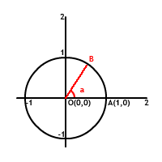
Nous savons que les coordonnées du point $B \, sont \, (\cos{(a)},\sin{(a)})$. Si maintenant nous voulons augmenter l'angle a de 5 degrés par exemple pour faire tourner notre clip. Nous obtiendrons un point $B'$ de coordonnées $(\cos{(a+5)},\sin{(a+5)})$.
Or, souvenez-vous du chapitre sur la trigonométrie, à la fin je vous ai donné 2 formules à apprendre :
Et si l'on regarde bien les formes obtenues, on remarque qu'aucune valeur ne nous est inconnue ; en effet :
nous pouvons très facilement obtenir la valeur du cosinus et du sinus de 5 ;
la valeur du cosinus et du sinus de $a$ correspond à l'abscisse et l'ordonnée de notre point B.
Nous avons donc gagné, nous avons déterminé les coordonnées du point B' uniquement avec les coordonnées du point B et de l'angle qui sépare nos deux points (5 degrés dans notre exemple).
Passons maintenant à l'application en ActionScript. Nous allons créer une fonction qui recevra en paramètre l'angle de rotation, puis nous allons calculer les nouvelles coordonnées de notre clip, et enfin nous allons appliquer ces nouvelles valeurs à notre clip.
function rotation(angle:Number):Void{
var cosAngle:Number = Math.cos(conversion_radians(angle));
var sinAngle:Number = Math.sin(conversion_radians(angle));
var newX:Number = clip._x*cosAngle-clip._y*sinAngle;
var newY:Number = clip._y*cosAngle+clip._x*sinAngle;
clip._x = newX;
clip._y = newY;
}
À ce niveau, si vous testez l'animation (déjà, le clip devrait tourner ; si ce n'est pas le cas, revérifiez votre code et relisez le chapitre ^^ ), vous devriez remarquer que le clip prend pour centre le point de coordonnées (0,0) ; or nous, nous voulons que la rotation soit effectuée autour du point de coordonnées (100,100). Pour cela, nous allons devoir ajouter les coordonnées du centre à celles de notre clip. Mais, une chose importante : nous allons aussi devoir les soustraire, lors du calcul des nouvelles coordonnées, pour que les formules restent cohérentes. Nous obtiendrons le code suivant :
function rotation(angle:Number):Void{
var cosAngle:Number = Math.cos(conversion_radians(angle));
var sinAngle:Number = Math.sin(conversion_radians(angle));
var newX:Number = (clip._x-centreX)*cosAngle-(clip._y-centreY)*sinAngle;
var newY:Number = (clip._y-centreY)*cosAngle+(clip._x-centreX)*sinAngle;
clip._x = centreX+newX;
clip._y = centreY+newY;
}
this.onEnterFrame = function(){
rotation(5) // 5 en degrés, la conversion en radians est faite dans notre fonction.
}
Voilà, les variables rayon et angle ne nous sont plus utiles, nous pouvons donc les supprimer : var rayon:Number = 100 var angle:Number = 0
Une dernière petite modification : si nous supprimons ces variables, nous ne pouvons plus les utiliser lors du 'placement' initial de notre clip. Nous allons le faire manuellement, de façon à ce qu'il soit à 100 pixels de notre point de centre :
clip._x = centreX + 100;
clip._y = centreY + 0;
Voilà : nous en avons terminé pour ce chapitre ; pour ceux qui se seraient emmêlé les pinceaux, je mets à votre disposition un récapitulatif du code mais pour votre formation, je vous conseille fortement de chercher un peu par vous-mêmes vos erreurs. Dans la vie courante, on n'a pas tout le temps un gentil tutoriel à sa disposition. ^^
function conversion_radians(degre:Number):Number{
return degre/180*Math.PI;
}
function rotation(angle:Number):Void{
var cosAngle:Number = Math.cos(conversion_radians(angle));
var sinAngle:Number = Math.sin(conversion_radians(angle));
var newX:Number = (clip._x-centreX)*cosAngle-(clip._y-centreY)*sinAngle;
var newY:Number = (clip._y-centreY)*cosAngle+(clip._x-centreX)*sinAngle;
clip._x = centreX+newX;
clip._y = centreY+newY;
}
var centreX:Number = 100;
var centreY:Number = 100;
var clip:MovieClip = this.attachMovie('boule','mc_boule',1);
clip._x = centreX + 100;
clip._y = centreY + 0;
this.onEnterFrame = function(){
rotation(5)
}
Vous connaissez maintenant deux méthodes pour faire tourner un clip autour d'un point. Dans la suite du tuto, du fait que nous aurons plusieurs points à gérer, nous utiliserons toujours la seconde méthode.
Dans ce chapitre, nous allons enfin commencer la 3D (ouf :lol: ). Nous allons juste élargir les applications du code que nous avons vu dans le chapitre précédent, il est donc important que vous l'ayez compris. :)
Jusqu'à présent nous avons travaillé seulement en 2 dimensions, à savoir l'abscisse et l'ordonnée de notre clip.
Pour introduire la 3e dimension, nous allons avoir besoin de créer un 3e axe 'z' dit de 'profondeur'. Pour un clip dans Flash, la valeur de z peut s'apparenter au 'niveau' auquel se situe le clip, mais nous verrons cela plus en détails plus tard. Au lieu de travailler avec des clips comme jusqu'à présent, nous allons travailler avec des points, ces points possèderont 3 coordonnées (x,y,z). Puis, pour visualiser le tout, nous allons affecter aux coordonnées de notre clip les coordonnées de notre point.
Euh... Mais pourquoi ne pas travailler directement avec les coordonnées de notre clip, alors ? Pourquoi introduire un point ?
Eh bien tout simplement parce que le clip nous sert seulement à visualiser les changements de coordonnées de notre point ; par la suite, vous pourrez tout simplement supprimer ce clip et relier 2 points par un lineTo, pour visualiser les changements par exemple. Mais pour l'instant nous resterons avec notre clip, nous verrons le reste un peu plus tard.
Nous allons donc créer notre point :
var point:MovieClip = new MovieClip(); // création d'un objet MovieClip
point.x = 0; // création de la variable x dans le MovieClip 'point'
point.y = 0; // création de la variable y
point.z = 0; // création de la variable z
Puis pour visualiser notre point (puisque par définition un point, c'est invisible ^^ ), nous allons attribuer au coordonnées de notre clip les valeurs de point.x et de point.y.
clip._x = point.x
clip._y = point.y
Dans la logique où nous nous sommes placés, la variable point.z représente la 'profondeur', cette notion est donc semblable à celle des niveaux dans Flash. Nous pouvons donc aussi, si nous en avons besoin, modifier le niveau de notre clip avec la valeur de point.z :
Dans le précédent chapitre, nous avons travaillé dans le plan défini par les vecteurs $\vec{x},\vec{y}$. Ce plan correspond à la surface de votre écran (plan bleu ci-dessous).
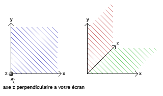
Mais toutes les considérations géométriques que nous avons vues précédemment sont aussi valides dans d'autres plans. Prenons par exemple le plan défini par les axes $\vec{x},\vec{z}$ (le plan vert ci-dessus), et un point de coordonnées (x=100,y=100,z=0) qui servira de nouveau centre à la rotation de notre clip. On peut très facilement faire tourner notre clip dans ce plan en apportant quelques modifications à notre code. Comme nous l'avons vu plus haut, ajoutons notre point et modifions les coordonnées de notre clip en fonction des variables de notre point :
var point:MovieClip = new MovieClip();
point.x = 100;
point.y = 100; // J'ai mis 100 pour que notre point ait la même ordonnée que pour 'rotation', j'aurais tout aussi bien pu mettre n'importe quoi d'autre puisque cette variable ne variera pas pour l'instant.
point.z = 100; // Notre clip est maintenant situé juste au-dessus de notre 'centre' de 'rotation'.
var clip:MovieClip = this.attachMovie('boule','mc_boule',1);
clip._x = point.x
clip._y = point.y
// Ici nous n'avons qu'un seul clip, nous n'avons donc pas besoin d'utiliser le 'swapDepths()', mais vous pouvez quand même le mettre si ça vous amuse.
// clip.swapDepths(point.z)
Nous devons aussi modifier la fonction rotation pour qu'elle modifie les variables de notre point et non plus directement les coordonnées de notre clip.
function rotation(angle:Number):Void{
var cosAngle:Number = Math.cos(conversion_radians(angle));
var sinAngle:Number = Math.sin(conversion_radians(angle));
var newX:Number = (point.x-centreX)*cosAngle-(point.y-centreY)*sinAngle; // ligne modifiée
var newY:Number = (point.y-centreY)*cosAngle+(point.x-centreX)*sinAngle; // ligne modifiée
point.x = centreX+newX; // ligne ajoutée
point.y = centreY+newY; // ligne ajoutée
clip._x = point.x; // ligne modifiée
clip._y = point.y; // ligne modifiée
}
Maintenant, nous voulons que notre point (et par conséquent aussi le clip) tourne dans le plan défini par les vecteurs $\vec{x},\vec{z}$, autour du point de coordonnées (x=100,y=100,z=0). Modifions notre code en conséquence :
function conversion_radians(degre:Number):Number{
return degre/180*Math.PI;
}
function rotation(angle:Number):Void{
var cosAngle:Number = Math.cos(conversion_radians(angle));
var sinAngle:Number = Math.sin(conversion_radians(angle));
var newX:Number = (point.x-centreX)*cosAngle-(point.z-centreZ)*sinAngle; // ligne modifiée (on a remplacé les variables de Y par les variables de Z)
var newZ:Number = (point.z-centreZ)*cosAngle+(point.x-centreX)*sinAngle; // ligne modifiée
point.x = centreX+newX;
point.z = centreZ+newZ; // ligne modifiée
clip._x = point.x;
clip._y = point.y; // Cette ligne n'a pas été modifiée, car dans le repère que nous avons choisi, l'ordonnée de notre clip correspondra toujours à la variable 'y' de notre 'point'. Cette ligne devient donc obsolète pour la rotation dans ce plan (puisque la valeur de 'point.y' ne change pas).
// clip.swapDepths(point.z) // Cette ligne est toujours inutile dans le cas où nous ne gérons qu'un seul clip.
}
var centreX:Number = 100;
var centreY:Number = 100;
var centreZ:Number = 0
var point:MovieClip = new MovieClip();
point.x = 100;
point.y = 100;
point.z = 100;
var clip:MovieClip = this.attachMovie('boule','mc_boule',1);
clip._x = point.x
clip._y = point.y
// clip.swapDepths(point.z)
this.onEnterFrame = function(){
rotation(5)
}
À ce stade, si vous testez votre animation, le clip devrait se déplacer sur l'axe \vec{x}. Mais bien sûr, la variation de niveau sur l'axe \vec{z} n'est pas visible. Pour la mettre en évidence (et pour vous prouver que votre code marche bien ^^ ), il existe une infinité de méthodes, je vous propose donc de modifier la taille de notre clip pour donner un effet de 'loin' ou 'proche'. À la fin de la fonction rotation, ajoutez ce code :
clip._xscale = point.z + 200
clip._yscale = point.z + 200
// On fait varier la taille (en %) de notre clip en fonction du 'niveau' (qui correspond à la valeur de 'point.z').
// Puisque la valeur de point.z varie entre -100 et 100 (puisqu'on s'est arrangé pour que le clip se situe à 100 du centre et que le centre est au 'niveau' 0 (z=0)), on y ajoute 200 pour obtenir un pourcentage entre 100 (taille normale) et 300 (taille triplée).
Alors ? Magnifique, n'est-ce pas ? Nous savons maintenant comment faire tourner notre point dans 2 plans parallèles. Le faire tourner dans le 3e plan ne nous posera donc aucun problème (juste quelques modifications du code). Eh bien, prochaine étape, on combine les rotations. ^^
Je viens de vous dire que vous étiez capables de créer la rotation dans le 3e plan, $\vec{y},\vec{z}$. Mais il me vient un doute, ^^ allez : montrez-moi que vous avez tout compris. Faites les modifications nécessaires avant de lire le code. ^^ (Toujours autour du même centre, (x=100,y=100,z=0).)
function conversion_radians(degre:Number):Number{
return degre/180*Math.PI;
}
function rotation(angle:Number):Void{
var cosAngle:Number = Math.cos(conversion_radians(angle));
var sinAngle:Number = Math.sin(conversion_radians(angle));
var newY:Number = (point.y-centreY)*cosAngle-(point.z-centreZ)*sinAngle;
var newZ:Number = (point.z-centreZ)*cosAngle+(point.y-centreY)*sinAngle;
point.y = centreY+newY;
point.z = centreZ+newZ;
clip._x = point.x;
clip._y = point.y;
// clip.swapDepths(point.z)
clip._xscale = point.z + 200
clip._yscale = point.z + 200
}
var centreX:Number = 100;
var centreY:Number = 100;
var centreZ:Number = 0
var point:MovieClip = new MovieClip();
point.x = 100;
point.y = 100;
point.z = 100;
var clip:MovieClip = this.attachMovie('boule','mc_boule',1);
clip._x = point.x
clip._y = point.y
// clip.swapDepths(point.z)
this.onEnterFrame = function(){
rotation(5)
}
Bon, eh bien maintenant, si on veut obtenir une rotation plus complexe, nous n'avons qu'à combiner les différentes rotation que nous avons vues précédemment.
En fait si l'on regarde bien, la seule chose que nous avons modifiée pour passer de la deuxième rotation à la troisième, c'est la fonction rotation. Nous allons donc récrire les 3 fonctions mais avec un nom différent pour chacune :
function rotationX(){ // pour la rotation dans le plan (y,z)
}
function rotationY(){ // pour la rotation dans le plan (x,z)
}
function rotationZ(){ // pour la rotation dans le plan (x,y)
}
Si vous avez du mal, essayez de bien regarder où et comment nous avons modifié la fonction pour passer à la rotation dans le plan défini par les vecteurs $\vec{y},\vec{z}$. C'est exactement le même principe pour les 3 fonctions.
Voilà : si vous pensez avoir réussi, nous allons le vérifier tout de suite. Nous allons appliquer à notre point plusieurs mouvements de rotation :
this.onEnterFrame = function(){
rotationY(5)
rotationX(5)
rotationZ(5)
// Pour mieux visualiser la rotation obtenue, je vous conseille de dessiner un cercle de 200 px de diamètre et de coordonnées (0,0).
// Si votre 'clip' sort de ce cercle, vous devez avoir un problème dans votre code.
}
Voilà, nous sommes maintenant capables de faire tourner un point dans plusieurs dimensions. :)
Hum, alors conquis ? :lol: Prochaine étape, on pousse la 3D un peu plus loin, on va créer plusieurs points.
Faire tourner un point c'est bien, mais en faire tourner deux c'est mieux. :) Dans ce tuto on va essayer de construire une forme relativement simple : un cube. C'est partiiiiiiiiiiiiiiiiiiiiiiii !
En écrivant notre code, vous avez sûrement remarqué que nos trois fonctions ne peuvent faire tourner qu'un seul et unique point. Nous allons donc les modifier pour qu'elles puissent faire tourner n'importe quel point. Pour cela, nous devons ajouter dans les paramètres de nos fonctions un MovieClip qui fera le lien vers le point que nous voulons traiter.
function placer_clip(clip:MovieClip){
clip._x = 100
}
placer_clip(monClip)
// En exécutant la fonction, le MovieClip 'clip' va faire référence au MovieClip 'monClip'.
// Mais dans une ligne suivante, nous pouvons tout aussi bien exécuter la fonction 'placer_clip()' avec un autre MovieClip.
Dans notre cas, notre code sera modifié comme cela :
function conversion_radians(degre:Number):Number{
return degre/180*Math.PI;
}
function rotationZ(point:MovieClip,angle:Number):Void{ // ligne modifiée et importante
var cosAngle:Number = Math.cos(conversion_radians(angle));
var sinAngle:Number = Math.sin(conversion_radians(angle));
var newX:Number = (point.x-centreX)*cosAngle-(point.y-centreY)*sinAngle;
var newY:Number = (point.y-centreY)*cosAngle+(point.x-centreX)*sinAngle;
point.x = centreX+newX;
point.y = centreY+newY;
clip._x = point.x;
clip._y = point.y;
// clip.swapDepths(point.z)
clip._xscale = point.z + 200
clip._yscale = point.z + 200
}
var centreX:Number = 100;
var centreY:Number = 100;
var centreZ:Number = 0
var point1:MovieClip = new MovieClip(); // ligne modifiée
point1.x = 0; // ligne modifiée
point1.y = 100; // ligne modifiée
point1.z = 0; // ligne modifiée
var clip:MovieClip = this.attachMovie('boule','mc_boule',1);
clip._x = point1.x // ligne modifiée
clip._y = point1.y // ligne modifiée
// clip.swapDepths(point1.z) // ligne modifiée
this.onEnterFrame = function(){
rotationZ(point1,5) // ligne modifiée et importante
}
Maintenant si nous voulons ajouter un point, rien de plus simple :
var point2:MovieClip = new MovieClip();
point2.x = 200;
point2.y = 100;
point2.z = 0;
// Par contre, il ne faut pas lui donner les mêmes coordonnées que le 'point1', sinon ils seront confondus et donc il y en a un qui ne nous servira à rien. ^^ (À moins qu'on lui applique des rotations différentes.)
Puis pour lui appliquer à lui aussi des rotations, il faut modifier la fonction qui s'exécute avec l'évènement onEnterFrame :
this.onEnterFrame = function(){
rotationZ(point1,5)
rotationZ(point2,2) // ligne ajoutée
}
Petite remarque : si nous voulons créer une forme qui puisse tourner, il faut que tous les points tournent à la même vitesse. Et donc, contrairement à la boucle précédente, nous aurions plutôt ce code-ci :
this.onEnterFrame = function(){
rotationZ(point1,5)
rotationZ(point2,5) // Même angle que pour le 'point1'.
}
Et l'avantage d'avoir nommé nos points comme cela, c'est que nous pouvons maintenant écrire une boucle qui va faire tourner tout nos point :
this.onEnterFrame = function(){
for(var i:Number = 1; i <= 2 ; i++){
rotationZ(this['point'+i],5)
}
}
// rotation de 'point1' puis de 'point2'
Ce code ne vous paraît peut-être pas très avantageux, mais je suis sûr que beaucoup d'entre vous auront compris qu'en changeant uniquement i <= 2 par i <= 5, nous allons faire tourner 5 points au lieu de 2 (si nous les avons créés précédemment, bien sûr).
Si vous avez testé le code précédent, vous avez sûrement remarqué que notre clip ne simule le mouvement que d'un seul point. Pour visualiser le deuxième, il faudrait créer un deuxième clip.
Avant de vous jeter dans cette tentative, je vais vous proposer une autre méthode. Au lieu de visualiser les mouvements des points avec des clips, nous allons simplement relier les points entre eux.
Dans un premier temps, supprimons toutes les lignes qui deviennent inutiles, c'est-à-dire toutes les lignes qui créent et positionnent notre clip :
On a donc supprimé 19 lignes de notre script (4 + 3*5), c'est donc une bonne phase d'optimisation. ^^ Maintenant, créons la fonction qui va relier nos deux points :
function relier(){
this.clear()
this.lineStyle(1,0x000000,100)
this.moveTo(point1.x,point1.y)
this.lineTo(point2.x,point2.y)
}
Puis exécutons-la dans notre boucle :
this.onEnterFrame = function(){
for(var i:Number = 1; i <= 2 ; i++){
rotationZ(this['point'+i],5)
}
relier() // ligne ajoutée
}
Bon : dans cette partie, on va mettre en pratique ce que nous venons de voir depuis le début de ce chapitre. Nous allons créer un cube.
Alors, en premier, il faut savoir de combien de points nous aurons besoin pour créer un cube.
1 par somme, donc 8 points.
Au lieu d'écrire 8 fois les 4 lignes pour créer un point, je vous propose de créer une fonction qui exécutera une boucle 8 fois. Pour les coordonnées des points, vous pouvez par exemple les enregistrer dans un tableau.
function init():Void{
var tabX:Array = new Array(50,150,150,50,50,150,150,50);
var tabY:Array = new Array(50,50,150,150,50,50,150,150);
var tabZ:Array = new Array(-50,-50,-50,-50,50,50,50,50);
for(var i:Number = 1 ; i <= 8 ; i++){
var clip:MovieClip = this.createEmptyMovieClip("point"+i,i);
clip.x = tabX[i-1];
clip.y = tabY[i-1];
clip.z = tabZ[i-1];
}
}
init() // On exécute la fonction
Maintenant que nous avons créé nos points, encore faut-il relier les bons entre eux. Pour cela il nous faut modifier la fonction tracer(). Étant donné l'ordre dans lequel nous avons créé les points (en fonction de la position dans les tableaux), il faut relier le point1 au point2 puis au point3 et enfin au point4. Pareil pour les points 5, 6, 7, 8. Et enfin relier deux à deux les points 1, 2, 3, 4 aux points 5, 6, 7, 8.
Maintenant, votre code devrait se composer :
d'une fonction conversion_radians() ;
de trois fonctions de rotation ;
d'une fonction tracer() ;
d'une fonction init() ;
des 3 lignes de définition du centre ;
d'une ligne d'exécution de la fonction init() ;
et d'une fonction attachée à l'événement onEnterFrame.
Vous pouvez tester, vous devriez avoir un joli cube qui tourne sur lui-même. :)
Dans ce chapitre, nous allons réutiliser notre cube sur lequel nous allons 'coller' des faces. En fait, nous allons replacer et déformer des clips, pour qu'ils s'adaptent à nos faces.
Normalement, si vous avez déjà lu ce chapitre, vous savez déjà déplacer / déformer des clips. Mais si je vous demande de transformer votre clip comme ceci pour qu'il s'adapte à notre face, eh bien normalement, vous ne savez pas (ou bien ça ne sert à rien de lire ce chapitre ^^ ).
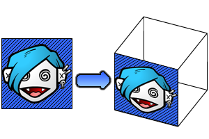
En fait, quand vous ouvrez la fenêtre de transformation dans Flash, vous connaissez ces différentes propriétés :
_x
_y
_width
_height
_xscale
_yscale
_rotation
Mais vous pouvez remarquer qu'il y a une transformation que vous ne savez pas faire via l'ActionScript : incliner.
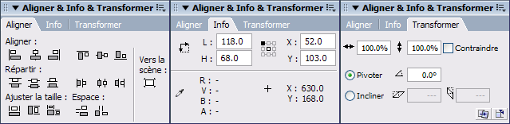
En fait, il n'existe pas directement de propriété qui nous le permette. Nous allons être obligés d'utiliser une autre méthode : la classe Flash.geom.Matrix().
Pour cet exercice, nous allons avoir besoin de 6 images (je vous laisse les trouver ^^ ). Peu importe leur taille, elle seront redimensionnées automatiquement.
Bon, maintenant il faut les importer dans notre document : Fichier => Importer => Importer dans la bibliothèque.
Puis nous allons convertir ces images en MovieClip : Insertion => Nouveau symbole (Ctrl + F8)
Puis sélectionnez Clip et validez. Maintenant dans notre clip, insérez notre image qui se trouve dans la bibliothèque (Ctrl + L).
Dernière manipulation : dans la bibliothèque, faites un clic droit => Liaison, puis cochez Exporter pour ActionScript et donnez-lui pour nom de liaison clip1.
Répéter ces opérations pour les 6 clips (en changeant bien les noms de liaison, clip1, clip2, clip3...).
Pour faire cela, nous allons avoir besoin de deux classes ; au début de votre animation, recopiez ces deux lignes qui servent à importer dans notre document les deux classes que nous allons utiliser :
On remarque que l'inclinaison et la modification de la taille prennent en compte la taille du clip. Il va donc falloir que nous nous débrouillions pour réussir à redimensionner précisément les clips.
Ex. : si un clip fait 10 pixels de largeur et qu'on veut le redimensionner à 2 pixels, nous devrons définir la propriété a sur 1/5 (pour diviser la taille par 5). Dans le cas général (dimensions quelconques), nous retiendrons cela :
a = largeurQueLonVeuxObtenir/largeurDuClip
Maintenant, pour l'inclinaison, c'est à peu près le même principe. Pour une inclinaison horizontale (propriété c), si on veut que la face du bas soit décalée de 'X' pixels :
c = DecalageQueLonVeuxObtenir/largeurDuClip
Maintenant, intéressons-nous au 'Comment appliquer notre matrice à un clip'. C'est ici que nous allons avoir besoin de la classe Transform() qui sert justement à appliquer des transformations à un clip.
Nous utiliserons la syntaxe suivante (il faut des connaissance en POO pour comprendre ce que font ces lignes, et ce n'est pas vraiment le but du tutoriel ^^ ) :
import flash.geom.Matrix
import flash.geom.Transform
// Importation des deux Classes.
var mat:Matrix = new Matrix() // création de l'objet 'mat'.
mat.c = 1 // modification de la propriété 'c'.
// vous pouvez aussi modifier toutes les autres propriétés par le même principe.
var trans:Transform = new Transform(nomDoccurenceDeMonClip) // création de l'objet 'trans'.
trans.matrix = mat; // on applique notre nouvelle matrice à notre clip.
Voilà : vous savez maintenant comment modifier un clip de manière avancée. :)
Bon : on passe maintenant à un exemple concret ; nous allons habiller notre cube créé au chapitre précédent (si vous avez sauté ce chapitre, allez y faire un tour pour récupérer le code ^^ ).
Avant de pouvoir placer nos clips, encore faut-il les avoir créés sur la scène. On va donc les créer (dans la fonction init(), ça fera parfaitement l'affaire :) ).
function init():Void{
var tabX:Array = new Array(50,150,150,50,50,150,150,50)
var tabY:Array = new Array(50,50,150,150,50,50,150,150)
var tabZ:Array = new Array(-50,-50,-50,-50,50,50,50,50)
for(var i:Number = 1 ; i <= 8 ; i++){
var clip:MovieClip = this.createEmptyMovieClip("point"+i,i)
clip.x = tabX[i-1]
clip.y = tabY[i-1]
clip.z = tabZ[i-1]
}
for(var i:Number = 1 ; i <= 6 ; i++){ // On crée une boucle qui va se répéter 6 fois.
var clip:MovieClip = createEmptyMovieClip("clip"+i,10+i) // On crée un clip vide au niveau 10+i.
clip.attachMovie("clip"+i,"clip",1) // On attache dans le clip vide le clip qui contient notre image.
}
}
On va donc créer une fonction placer() dans laquelle on placera les faces (non, sans blague :p ). Puis on la fera s'exécuter chaque fois que l'on voudra faire tourner des points :
function placer():Void{
// On place les faces.
}
onEnterFrame = function ():Void{
this.onEnterFrame = function(){
for(var i:Number = 1; i <= 8 ; i++){
rotationX(this['point'+i],5)
rotationY(this['point'+i],5)
rotationZ(this['point'+i],5)
}
}
tracer();
placer(); // Ligne ajoutée.
};
Maintenant que tout est en place, remplissons notre fonction placer(). Déjà, on doit créer les objets de la classe Matrix et Transform.
var matrix:Matrix = new Matrix()
var trans:Transform = new Transform(clip1) // Notre objet Transform pointe sur le premier clip ; quand nous voudrons travailler sur le deuxième clip, nous allons être obligés de recréer un objet Transform.
Puis nous modifions la position du coin supérieur droit de notre clip (sur le point1 pour ce clip-ci).
matrix.tx = point1.x // positionnement en abscisse.
matrix.ty = point1.y // positionnement en ordonnée.
Maintenant, nous allons voir les 4 lignes les plus difficiles du chapitre, ^^ je vous ai donc fait des petits dessins. :p
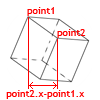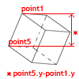
Voilà : nous savons comment obtenir la largeur voulue mais maintenant, il faut diviser par la largeur de notre clip :
// dimension en largeur.
matrix.a = (point2.x-point1.x)/clip1.clip._width
// dimension en hauteur.
matrix.d = (point5.y-point1.y)/clip1.clip._height
Maintenant, pour l'inclinaison :
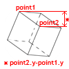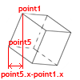
Puis on divise :
// Inclinaison en hauteur.
matrix.b = (point2.y-point1.y)/clip1.clip._width
// Inclinaison en largeur.
matrix.c = (point5.x-point1.x)/clip1.clip._height
Pour conclure, on applique notre nouvelle matrice à notre clip1 :
trans.matrix = matrix
Voilà ; pour résumer, voici notre code pour repositionner le clip1 :
function placer():Void{
var matrix:Matrix = new Matrix()
var trans:Transform = new Transform(clip1)
matrix.tx = point1.x
matrix.ty = point1.y
matrix.a = (point2.x-point1.x)/clip1.clip._width
matrix.d = (point5.y-point1.y)/clip1.clip._height
matrix.b = (point2.y-point1.y)/clip1.clip._width
matrix.c = (point5.x-point1.x)/clip1.clip._height
trans.matrix = matrix
// Faites de même pour les 6 clips.
}
Si vous avez testé votre animation, vous avez remarqué que les clips ont l'air bien placés mais il apparaissent un peu n'importe comment.
Cela est dû au fait que vos clips ont été créés à des niveaux fixes, et on verra donc toujours le clip 6 au-dessus du clip 5, 4 ou 3...
Nous allons donc (dans notre fonction placer()) cacher les clips qui ne devraient pas être visibles (via la propriété _alpha).
Pour faire ça, il existe plein de méthodes : j'ai choisi de vous en exposer une mais il y en a peut-être d'autres, meilleures ou plus simples à mettre en oeuvre.
Pour réaliser ce code, je suis parti du constat que, quelle que soit la rotation de notre cube :
on ne voit au maximum que 3 faces ;
et quand on voit 3 faces, il n'y a qu'un seul sommet commun.
Le but est d'arriver à déterminer quel est ce sommet...
Je suis parti du principe qu'en général, la moitié des points avaient une variable z négative (car centreZ = 0), et donc que l'autre moitié avait une variable z positive. Le point que nous cherchions était donc dans ce deuxieme groupe. Puis j'ai remarqué que dans le plan défini par les vecteurs $\vec{x},\vec{y}$, notre point était toujours plus proche du centre (dans notre cas (100,100)) que les autres.
J'ai donc créé une boucle qui fait des vérifications sur nos 8 points.
Si la variable z du point est positive : je compare la distance entre le point et le centre avec une variable dismin, si elle est plus petite, je l'enregistre dans la variable dismin, et j'enregistre le numero du point dans une autre variable.
En code, ça nous donne ça :
var dismin:Number = 1000 // Un grand nombre pour commencer.
var num:Number; // Variable pour enregistrer le numéro du point.
var dis:Number;
var disX:Number;
var disY:Number;
for(var i:Number=1;i<=8;i++){ // boucle du point 1 au point 8.
var pts:MovieClip = this['point'+i] // Raccourci pour accéder à la variable this['point'+i];
if(pts.z > 0){ // si la variable 'z' est positive.
disX = pts.x-centreX // Raccourci pour avoir la distance en abscisse.
disY = pts.y-centreY // Raccourci pour avoir la distance en ordonnée.
dis = Math.sqrt(disX*disX+disY*disY) // Formule de Pythagore pour déterminer la longueur de l'hypoténuse d'un triangle rectangle.
if(dis < dismin){ // Si la distance est inférieure à 'dismin'.
dismin = dis // On actualise 'dismin'.
num = i // On sauvegarde le numéro du point.
}
}
}
Voilà : nous savons maintenant quel est ce point, nous n'avons plus qu'à actualiser la propriété _visible de nos 6 clips pour terminer :
clip1._visible = (num == 1 || num == 2 || num == 5 || num == 6)
// Notre clip1 est situé entre les points 1, 2, 3 et 4. Donc si l'un d'eux est notre point principal, le clip devra être visible.
// Les '||' signifient 'ou', donc la formule (num == 1 || num == 2) nous renverra True si num=1 <souligne>ou</souligne> si num=2, sinon elle nous renverra False.
clip2._visible = (num == 2 || num == 3 || num == 6 || num == 7)
clip3._visible = (num == 3 || num == 4 || num == 7 || num == 8)
clip4._visible = (num == 4 || num == 1 || num == 8 || num == 5)
clip5._visible = (num == 1 || num == 2 || num == 3 || num == 4)
clip6._visible = (num == 5 || num == 6 || num == 7 || num == 8)
Voilà, c'est fini : vous pouvez tester. Si tout marche bien, magnifique, vous avez réussi ^^ sinon, euh... vous avez dû faire une erreur quelque part. ^^ Et puis je n'ai pas trop envie de vous donner un récapitulatif, le but c'est d'avoir compris et non que l'animation marche (enfin, un peu quand même aussi :o ).
Bon, voilà : vous en savez presque autant que moi sur la 3D. À vous maintenant d'explorer les différentes classes de Flash pour améliorer le système.
Voilà : vous avez fini ce tutoriel ; j'espère que vous avez appris beaucoup de choses, et qu'elles vous seront utiles.